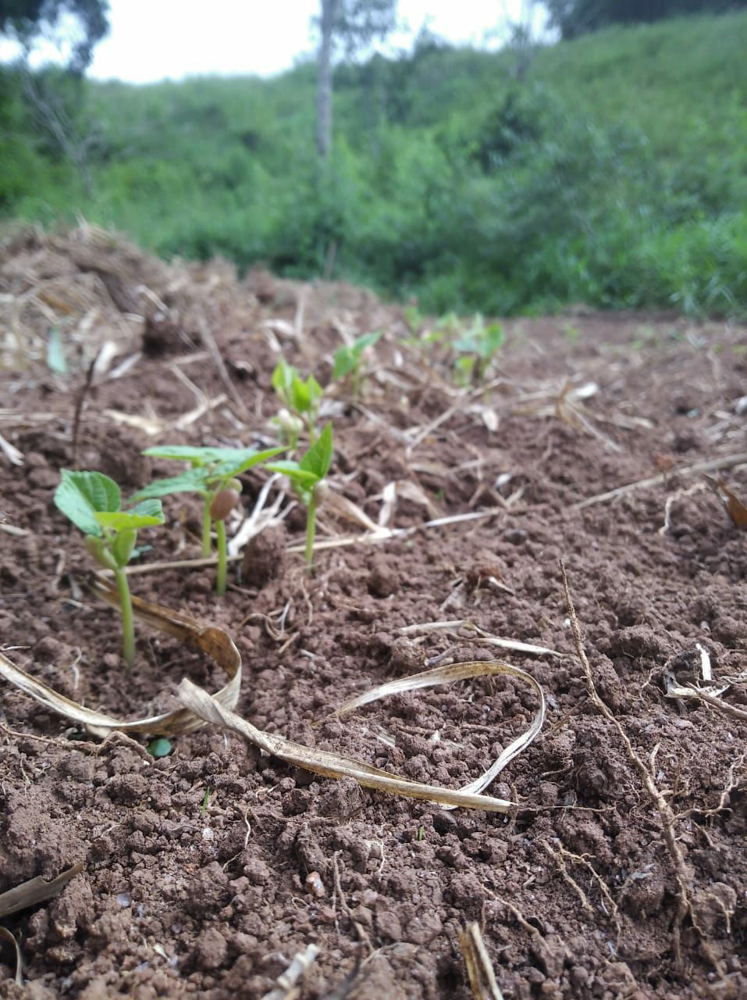

Em solo real...
O plantio do Feijão Amigo já começou desde Março de 2023!
Você também pode participar do movimento de reflorestamento com segurança alimentar e ainda ganhar uns mimos de presente.


